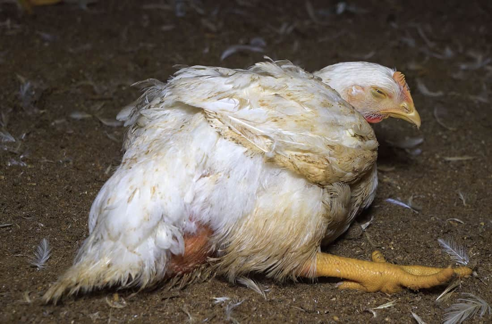
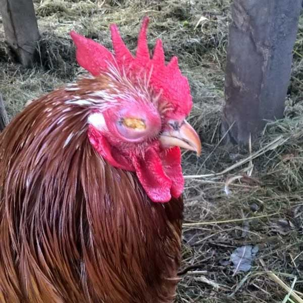
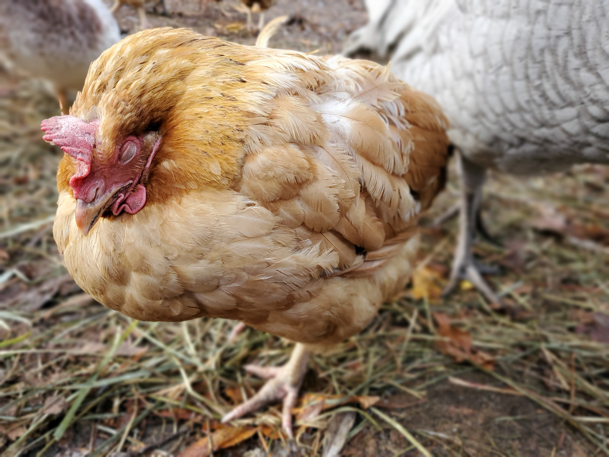
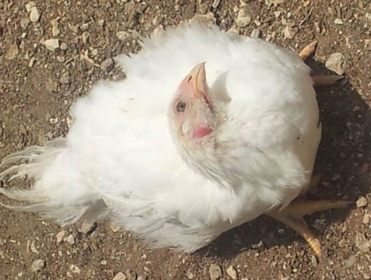

COMMON DISEASES THAT AFFECT POULTRY
Mareks Disease

Mycoplasma Disease

Fowl pox Disease

coccidiosis Disease
Newcastle Disease

VACCINATION CHART
| Age of Birds: | Day Old | 1 Week Old | 2 Weeks Old | 3 Weeks Old | 4 Weeks Old | 5 weekks Old | 6 Weeks Old | 7 Weeks Old |
|---|---|---|---|---|---|---|---|---|
| Disease: | Mareks | Gumboro 1st Dose | Gumboro 2ndDose | Newcastle 1stDose | Gumboro 3rdDose | Newcastle 2ndDose | Fowl Pox | Fowl Typhoid |
| Mode of Administration: | Done at Hatchery | Drinking Water | Drinking Water | Drinking Water | Drinking Water | Drinking Water/Eyedrops | Wing stab | Intramuscular Injection |
I am a farmer of poultry. I actually do all the labor-intensive tasks associated with raising chickens and harvesting the results. However, an outbreak of several poultry illnesses left me to pick up the remains. I was able to learn about typical chicken ailments and how to treat them with the assistance of an agro- vet specialist. I recently visited Naivasha Kari farm and got some advice on how to handle and treat the most frequent and harmful chicken ailments.Below are discussed common diseases:
MAREKS DISEASE
One of the viral infectious poultry infections is mareks disease. This sickness often affects poultry between 4 to 7 weeks old. The diseased chicken eventually becomes paralyzed.
Symptoms
Defense Method
There is no effective cure for this poultry sickness. Through immunization, the chicken can be maintained free of this illness. When the chickens are one day old in the hatchery, provide the vaccination to them. The Mareks disease vaccination is called HTV-126. Apply 0.2 milliliters of this poultry vaccination through injection beneath the skin of each bird.
Remedy
- Follow the healthy poultry farming method.
- Buy the baby chicken from virus and disease free farm or hatchery.
- Keep various aged chicken in different poultry house.
- Try to keep the poultry in healthy and proper way.
MYCOPLASMA DISEASE
Mycoplasmas are bacterial-like creatures that do not have cell walls, live inside their hosts, and are more likely to perish outdoors owing to arid weather and high temperatures. They like the mucosal linings of the respiratory tracts of their host. They can linger in a chicken worker's hair for three days, nose for one, feathers for two to four days, and egg material for six to eighteen weeks. Despite the roughly 24 species that infect poultry, M. gallisepticum is the most harmful one, and we will talk about it today.
Signs
Signs might range from moderate to severe depending on the immunological condition of the infected birds. Birds sneeze and make tracheal rales (small clicking, bubbling, or rattling sounds from the lungs). If this persists, there will be swelling around the nose (sinuses), nasal secretions, and irritated eyes (red, swollen, painful).The majority of the time, it becomes complicated by other bacteria like E. coli and manifests as a chronic respiratory condition (CRD). You could assume that if you enter a house at night, the birds are snoring. The farmhand frequently calls out, "kuku zang'orota," while the hens snore.
Prevention
You have to begin with a hostile flock. Please be advised that upon hatching, this illness might be transferred from the mother hen to the day-old chick. Obtain your chicks from breeders that are Mycoplasma-free. Use the "all-in, all-out" strategy, which entails retaining just one group of flocks that are the same age. Limit guests and refrain from distributing fiber egg trays from unidentified sources. It's important to keep up with hygiene standards. Chickens' upper respiratory infections may suddenly become more common due to inadequate ventilation and an atmosphere that is too dusty. To prevent a buildup of hazardous gases during the day and night, make sure the hens have access to fresh air in the poultry unit.
Vaccination
There are both dead and live vaccinations on the market, yes. These immunizations reduce respiratory illnesses and a decline in egg production while being secure and effective. To encourage immunization, nevertheless, one must maintain excellent cleanliness, decrease rodent populations, limit flock visits, and exclude backyard flocks.The cost, limited protection against colonization, and fact that they can only be given during the growing period are all drawbacks of immunization. Keep in mind that there are other other illnesses with comparable clinical symptoms, including Aspergillosis, Coryza, E. coli, Newcastle disease, and Infectious Bronchitis. As soon as you discover any unusual symptoms, see a veterinarian to be certain of what you are dealing with.
COCCCIDIOSIS
This issue of blood in chicken waste (stool) has affected many farmers. Coccidiosis is a common, and sometimes deadly, intestinal disease caused by a parasitic organism that attaches itself to a chicken's intestinal lining. This parasitic invasion damages the intestinal tract, preventing the host chicken from absorbing nutrients vital to their survival. Thus automatically the chicken will have less nutrients required to sustain the bird automatically will lose weight and stress will be a priority. It is something disappointing when the condition is severe they die if not treated.
Signs and Symptoms
- Decreased growth rate (in young chickens).
- Weight loss (in older chickens)
- Ruffled feathers.
- Decreased food or water consumption.
- Pale comb or skin
- Weakness and listlessness.
- Blood in chicken droppings
- Also you can notice blood located at the vent site of the bird.
Treatment
If one of the birds start showing signs of coccidiosis, it’s good to treat the whole flock with anti-coccidiostats. You can name them. Mostly we use AMPROLIUM, COCCID, AMPROX and ESB 3. All these all are anticoccidial drugs. Remember to use anti-stress drugs in combination to relieve stress induced from the infection. Some anti-stress drugs include Amilyte, Cosvita, Vitapoultry, Tonorphose and for chicks even Vigosin performs very well.
Prevention
Biosecurity
Maintaining a clean environment in the chicken coop , is key in prevention of coccidiosis. Wash and disinfect drinkers and feeders using disinfectants which are not harmful to your flock. Disinfectants include:
- Ultracide
- Biosafe
- Kupacide
ROUNDWORMS
Roundworms are the most important worms of poultry . Among them , the large roundworm Ascaridia galli is the most common . Ascaridia are the largest roundworms of birds. The adults live in the lumen of the small intestine. The larval stages invade the intestine.
Harmful Effects
- A. galli infection causes poor bodily condition and weight loss. The degree of effect is related to the number of worms present.
- In severe infections intestinal blockage can occur. This may lead to deaths, especially in younger birds
Chickens infected with a large number of worms suffer from loss of blood, retarded growth, enteritis (inflammation of the intestine), and greatly increased mortality
Diagnosis
Treatment
- Piperazine compounds have been widely used for treatment against Ascaridia infection, since they are non-toxic. 9 Piperazine may be given to chickens in the feed, water, or as a single treatment.
- Piperazine in drinking water is the best practical method of giving piperazine for commercial flocks.
- Fenbendazole is also effective.
Control
- Roundworms, in large part, can be prevented by raising birds in cages.
- Poultry should receive a diet which is adequate, especially in vitamin A and vitamin B complex compounds.
- Proper management of litter. Keep the litter as dry as possible by frequent stirring. Change of litter can reduce infections. Litter may also be treated with suitable insecticides.
- Avoid overcrowding. Overcrowding produces more favourable conditions for worm development by increasing the chances of infection.
- Extreme care should be taken to ensure that feed and water are not contaminated .
FOWL POX
Fowl pox is one of the common chicken disease which has distinctive symptoms. The chickens will develop white spots on their skin, scabby sores on their combs, white ulcers in their mouth or trachea, and their laying stops This disease has various treatments options. You can feed them soft food and give them a warm and dry place to try to recoup. With adequate care, there is a great chance they can survive this illness. There is also a vaccine on the same.
Spread
- Spread of the virus from one bird to another by direct contact is the main method of spread. Most of the spread is the result of birds picking, fighting, or scratching one another. Some break in the skin is required for the virus to enter the cells, grow, and cause disease.
- Infection also occurs by mechanical spread of virus to the injured skin . Individuals handling birds at the time of vaccination may carry the virus on their hands and clothes, and may unknowingly deposit the virus in the eyes of susceptible birds
- Mosquitoes are known to transmit the disease and produce eye infection. Mosquitoes can infect a number of birds after a single feeding on a bird infected with fowl pox virus .
- In a contaminated environment, presence of virus in the air from feathers and dried scabs containing fowl pox virus, may cause skin and respiratory tract infection. The virus can survive in dried scabs for months or even years
- Bad sanitary and hygienic conditions help in the spread of the disease
Control
- Fowl pox can be prevented by vaccination:Therefore, preventive vaccination using a live vaccine is the most successful control method. Even when an outbreak of fowl pox has been diagnosed, it is advisable to vaccinate the flock immediately to stop further spread of infection.
- Precautions should be taken to minimize the spread of the vaccine virus, both on the birds and in the environment. Being a live virus, it is capable of spreading the disease and therefore must be handled carefully.
- Carcasses of dead or affected birds should be buried or burnt. After removal of the birds the house should be thoroughly disinfected, although the virus remains in the infected scabs and is difficult to clear from certain premises.
INFECTIOUS BRONCHITIS
This disease doesn’t have slight mercy when it comes calling because of its tendency to cause ‘massacre’. It is easily identifiable by its capability to make chickens sneezing, snoring, and coughing. It also causes nose and eyes drainage secretion. Bad news is, their laying will cease too. The prevention cure is quite common – vaccination .its natural treatment is quite simple .Just give them a warm, dry place to recoup. In addition, give them a small spoon of warm herb tea and fed them fresh herbs.
INFECTIOUS CORYZA
Infectious Coryza has some common symptoms as Infectious Bronchitis but has some different symptoms. The birds’ head and combs will become swollen. Then a discharge will begin to flow from their eyes and noses .They will stop laying leaving them with moisture under their wings. Best option is to kill your chicken once it contracts this disease because its carrier is for eternity hence risking the rest of the flock. Be sure to discard the body to prevent other animals from this infection. Unfortunately, there is no vaccine to stop this disease.
BOTULISM
Botulism doesn’t fell that off from fowl pox but can be easily differentiated. Chickens begin to have tremors which will progress into total body paralysis including their breathing. Their feathers will be easy to pull out and death usually occurs within a few hours. Its sure treatment is an antitoxin that can be purchased from your local vet but may prove quite expensive. However, if you notice the disease in its early stages, you can mix 1 teaspoon of Epsom salts with 1 small spoon of warm water. Give it to them by dropper once everyday.
FOWL CHOLERA
Fowl Cholera is a bacterial disease that can be contracted from wild animals or food and water that has been contaminated by this bacteria. The most common symptoms of this diseases is greenish or yellowish diarrhea by your birds.in addition, they may struggle while breathing and have a darkened head or wattle. Sadly, there is no real treatment when it comes to it. Moreover, your birds may still be a carriers of the disease even if they whither the disease. The best action is to a vaccinate them so as to prevent the disease from ever knocking on your door. Finally, get rid of the chickens’ carcasses as a result of this disease